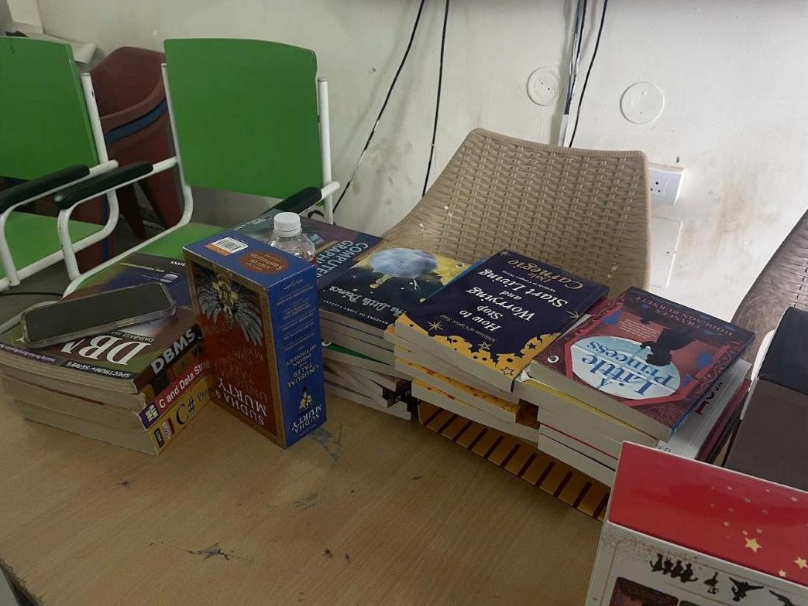
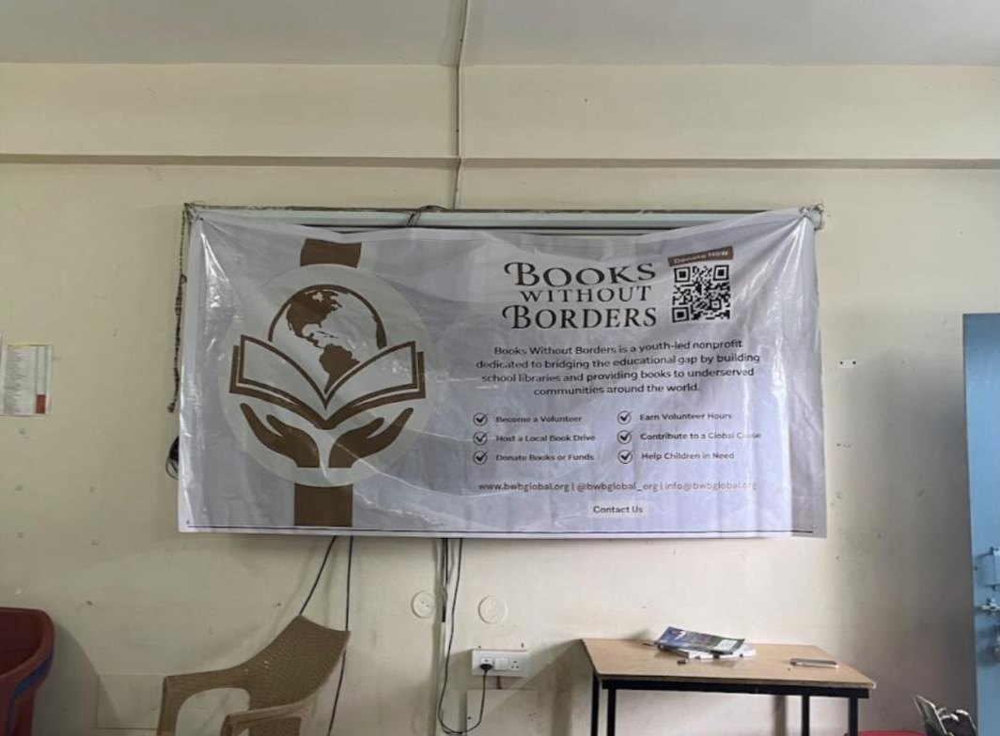

Books Without Borders is a youth-led 501(c)(3) nonprofit. We translate openly licensed picture books into languages that have very few. An AI model writes the first draft, native speakers fix every line, and the finished books are free to read, print and share.
Second edition
Books Without Borders started in 2025 with book drives. In July 2025 we gave 83 books and merit-based scholarships to a government school in Telangana, India, with more than 240 students in grades 6 through 10.
A donated book helps the one school that receives it. A translated book with an open license can be read, printed and reused anywhere, for free, in the language a child speaks at home.
So in November 2026 we stopped collecting books and started making them.

First edition, 2025
- Books donated
- 83
- Students served
- 240
- Raised in donations
- $101
How many free picture books does a child get?
It depends on the language. These are the free children's books listed in StoryWeaver and Bloom Library, two of the largest open libraries, added together. Telugu has 991. Tigrinya has 14.
Counted November 14, 2026. A book listed in both libraries is counted twice. Hover or tap a bar for the split.
Contents
- How a book is madethe methodFollow one sentence from the model's draft to the finished page.
- Open researchthe dataEvery correction becomes public data on where AI translation goes wrong.
- Our story so far2025 to now83 books, 240 students, and why we changed course.
- Get involvedfive waysReview a book, bring us a partner, or start a chapter.
- Donatewhat it pays forPrinting, translation costs and thank-yous for reviewers.
The plan, one language at a time
We work on a single language until it has at least 10 finished books. Our first language is being chosen now with speakers in North Texas, and we'll name it here once our community partner says yes.
- November 2026
Set up
Choose the language. Find a community partner. Every reviewer signs a consent form before any work starts.
- December to January 3
Pilot
Five reviewed books published. The first dataset and our code go public.
- January to March 2027
Build
15 to 20 books. Findings written up and submitted for peer review.
- April to August 2027
Grow
Dataset version 1.0. Monthly story hours. A playbook so another team can start a new language.
Do you speak a language with very few children's books?
We need native speakers to read short picture-book drafts and fix what the model got wrong. You're credited by name in the book if you'd like to be.
How a book is made
Machine translation is fast and, in languages with little written material online, often wrong. Native speakers are right and short on time. We put the two together and publish nothing until two people who grew up with the language have read it.
One sentence, start to finish
An illustration. Real drafts and fixes are in the target language. Here they're shown read back in English so anyone can follow.
-
1
We pick a book we're allowed to translate
Source books come from StoryWeaver and Bloom Library, where authors and illustrators have published under open licenses. We choose early readers with short sentences and strong pictures, and our community partner helps pick the topics.
The source page"Don't be afraid," Grandmother told the little goat. "The moon is only sleeping."
CC BY
4.0 -
2
A model writes the first draft
Every book goes through the same fixed prompt, saved in public with the rest of our code. We run more than one model on each book so we can compare them later.
The model's draft, read back in English"Do not fear," the old woman informed the small goat. "The moon is merely asleep."
-
3
Two native speakers review it, separately
Each reviewer works alone from a one-page guide. They fix the line and tag what kind of mistake it was. They don't see each other's changes.
Two reviews of the same draft"Do not fear," the old woman informed the small goat. "The moon is merely asleep."
- Reviewer one: "the old woman" is a mistranslation, she's the goat's grandmother. "Informed" is the wrong register. Nobody talks to a child like that.
- Reviewer two: agrees on "the old woman." Also marks "merely" as too hard for a first reader.
-
4
A third reader settles the differences
Where the two reviews disagree, a third native speaker decides. Changes made to fit the culture, like swapping a food or a name, are logged separately because they aren't errors.
The corrected line"Don't be afraid," Grandmother said to the little goat. "The moon is only sleeping."
- Both reviewers' fixes were kept.
-
5
The book goes out free, and so do the corrections
The finished book is published with every original credit, plus the reviewers' names if they want them there. Each corrected line becomes one row in an open dataset.
One row of the dataset- source_en
- "Don't be afraid," Grandmother told the little goat.
- draft
- the model's line, in the target language
- corrected
- the reviewed line, in the target language
- error_tags
- mistranslation, register, reading level
- review_seconds
- how long the fix took
Can we translate it?
It depends on the license the author chose. Pick one.
Where the books go
Finished books will be free to read and download on StoryWeaver and Bloom Library, the same open libraries the source books come from.
We'll print a small run of each title for the community partner who helped make it. Printed copies carry a QR code that opens the free digital and audio versions, and we'll record narration so the books work as talking books too.
Then we read them out loud. The plan is a launch read-aloud with our partner and a story hour every month after that.
Have a place for a story hour?
Libraries, schools and community centers can host one, and families get the books free.
Open research
Every book we make leaves behind a record of each line the model got wrong and how a native speaker fixed it. We publish that record so other people can use it.
The question
How do AI models fail when they translate children's books into a language they've seen very little of? And do the automatic scores researchers rely on notice?
We run three or four models, some commercial and some open, on the same books with the same prompt. Native speakers rate every draft from 1 to 5 for accuracy, fluency and fit for a young reader, and we time each review.
Then we check whether two standard metrics (chrF++ and COMET) and an AI judge agree with the people.
What reviewers mark
Ten tags, adapted from the MQM framework translators use. Reviewers pick one for every fix.
- Mistranslation
- The draft says something the story doesn't.
- Omission or addition
- Words dropped, or words the author never wrote.
- Agreement and morphology
- Endings that don't match in gender, number, tense or case.
- Honorifics and register
- Too formal, too casual, or the wrong form of respect.
- Word order
- Every word right, in an order no speaker would use.
- Dialect or script
- The wrong regional variety, spelling system or text encoding.
- Loanwords
- A borrowed word where the language has its own, or the reverse.
- Idioms
- A saying translated word for word.
- Reading level
- Correct, but too hard for a child learning to read.
- Cultural fit
- A name, food or custom that needs adapting. Logged as an adaptation, not an error.
What we release
- The dataset
- For every sentence: the English source, each model's draft, the corrected text, error tags, ratings and review time. Licensed CC BY 4.0 and posted on Hugging Face with a citable DOI. The first version is due in January 2027.
- The code
- Translation scripts, prompts, the annotation guide and the evaluation code, on GitHub under an open-source license. Adding a new language takes one config file.
- The findings
- Written up and submitted for peer review in 2027, with a free preprint anyone can read.
Links will be added here when the first release is out.
Consent and privacy
- Reviewers sign a consent form before any of their corrections enter the dataset. It says the corrections will be public under an open license and may be used for research, including training models.
- Reviewers appear in the data under an anonymous ID. Names go only in book credits, and only with permission.
- No children's names, photos or personal details are collected.
- For Indigenous and small-community languages, the community decides whether the data is released. We follow the CARE Principles for Indigenous Data Governance.
Our story so far
A student-run nonprofit that began with book drives and now makes the books itself.
-
2025
Founded by students
Books Without Borders began after our founder visited India and saw children kept out of school by poverty and by schools without enough resources. The first idea was to move books and funding from communities with extra to schools that needed them.
We registered as a 501(c)(3) nonprofit and set a mission: close the education gap for disadvantaged youth worldwide, so every child can reach their full potential.
-
July 2025
Telangana, India
Our first project supported an under-resourced government school in Telangana serving grades 6 through 10. We collected book donations, raised money locally and funded merit-based scholarships.
Summer 2025
- Books donated
- 83
- Students served
- 240
- Raised in donations
- $101

Our banner at the school. Some of the 83 books. -
Fall 2025
Readathon Revolution
A two-week reading challenge for U.S. elementary schools, kindergarten through fifth grade. Students set their own reading goals and collected pledges from family and neighbors. We built the toolkit for schools: reading logs, parent letters, donation forms, teacher guides, certificates and classroom leaderboards.
The design sent 70% of funds to libraries, tuition and school supply kits in South Sudan and other underserved communities, and returned 30% to each participating school.
-
November 2026
Why we changed course
Collecting and moving physical books was hard to keep going as a student team, and each book could only ever reach one shelf.
Meanwhile, for a lot of languages the children's books barely exist. A family can look for a bedtime story in the language they speak at home and find a dozen titles, total.
Translation tools have gotten good enough to produce a rough draft in many of those languages. They aren't good enough to hand to a child. Closing that distance takes native speakers, and it's work a small volunteer team can do. So that's now all we do.
What hasn't changed
Education is a right, not a privilege.
Our mission now
Books Without Borders makes free children's books in languages that have very few, and shares what the work teaches about how AI handles those languages.
Get involved
The books only work if people who grew up with the language read every line. Tell us who you are and we'll show you where you fit.
Which of these is you?
Start a chapter
A chapter is a small team working on one language: a language lead and a few native-speaker reviewers. We'll open the first new chapter once our first language has 10 finished books.
We're writing down everything as we go, from the consent form to the review spreadsheet, so a new team can copy the process without starting over.
Donate
We're a volunteer team, and the books we translate are free to use. Donations cover the parts that cost money.
What a donation pays for
- Printing
- A small run of each finished book for the families and community partner who helped make it.
- Translation
- The cost of running AI models to write first drafts. We log what every run costs.
- Thank-yous
- Gift cards for the native speakers who review each book.
Give online
Our donation form takes one-time, monthly or yearly gifts.
Books Without Borders is a registered 501(c)(3) nonprofit. EIN 35-2895150.
To give another way, write to info@bwbglobal.org.
No money? Time works too
An hour from a native speaker is worth more to a book than anything we can buy.